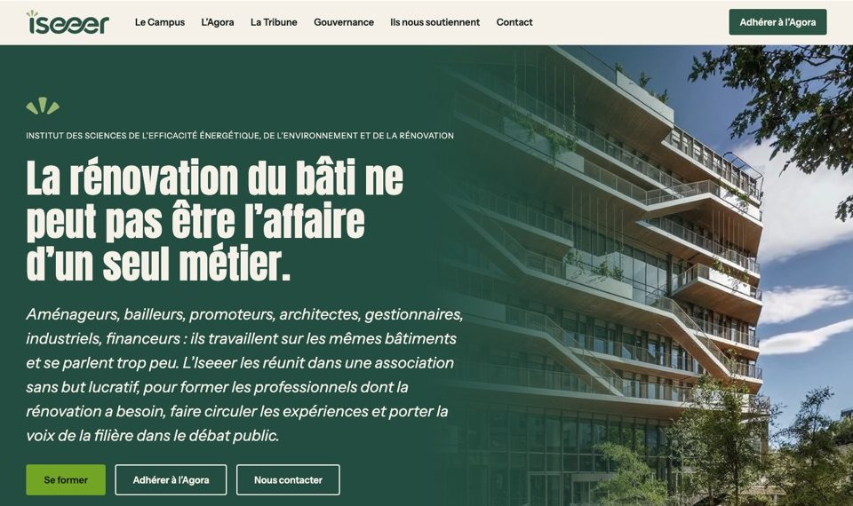
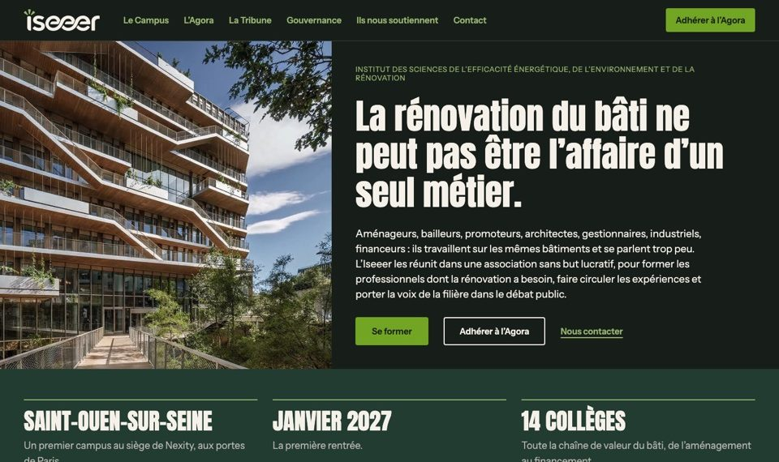
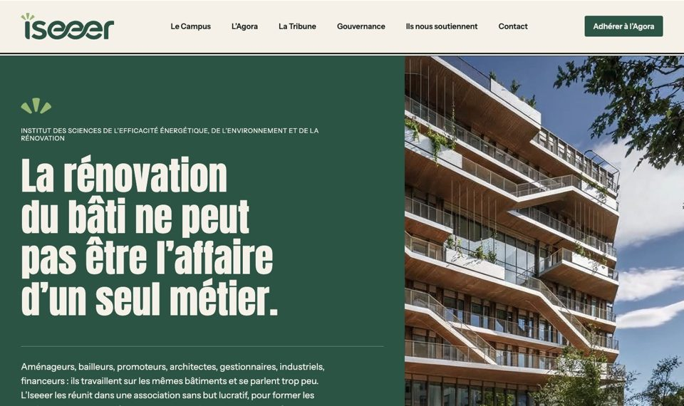

Le site, en trois pistes
Voici trois pistes en 7 pages, et depuis le 17 novembre le parcours d’adhésion. Le contenu (texte, images, etc.) est provisoire, il s’appuie sur les éléments que j’ai collectés (présentation, articles de presse et autres). Il faudra tout relire attentivement.
La barre grise tout en haut permet de revenir ici, ou de passer à la même page dans la piste précédente ou suivante, pour comparer.

Le communiqué
Une ouverture de marque sur fond vert, une image qui se fond dans le bandeau, des pages posées sur une feuille crème.
Ouvrir la piste A
L’encre
Un site sur fond encre, la photo à côté du titre, des en-têtes de page compacts.
Ouvrir la piste B
La revue en couleurs
Des fonds clairs, des parties numérotées alignées à gauche, l’adhésion toujours à portée dans le menu.
Ouvrir la piste CAdhésion, espace adhérent et agenda
Ajouté le 17 novembre : le parcours complet, de l’offre à l’espace réservé aux membres, et l’agenda des événements. Chaque étape existe dans les trois pistes. Un bandeau jaune, sous la barre grise, signale ce qui est fictif.
On clique sur « Adhérer »
L’offre : 3 500 € par an, ce qu’elle comprend, visiteur ou adhérent, les quatre étapes.
ABCLe bulletin et le paiement
Organisme, collège, contact, puis carte ou virement sur facture.
ABCL’accueil de l’adhérent
Juste après le paiement : les accès partent par mail, ce qui attend dans l’espace, le premier rendez-vous.
ABCLa connexion
Identifiant (l’adresse mail) et mot de passe. À côté, l’appel à adhérer pour ceux qui ne le sont pas.
ABCL’espace adhérent
Le tableau de bord : annuaire, contenus réservés, agenda, l’adhésion et les collaborateurs.
ABCL’annuaire
La recherche par nom, métier ou collège, et les fiches des membres.
ABCLes contenus réservés
Comptes rendus, vidéos, présentations, notes de la Tribune.
ABCL’agenda public
Le calendrier du mois et la liste de la saison, ouverts à tous. Événements payants pour les visiteurs, certains réservés aux adhérents.
ABCLa fiche événement, côté visiteur
Programme, places restantes, formulaire d’inscription avec paiement.
ABCLa même fiche, côté adhérent
L’inscription est comprise : un clic, et c’est réservé.
ABC